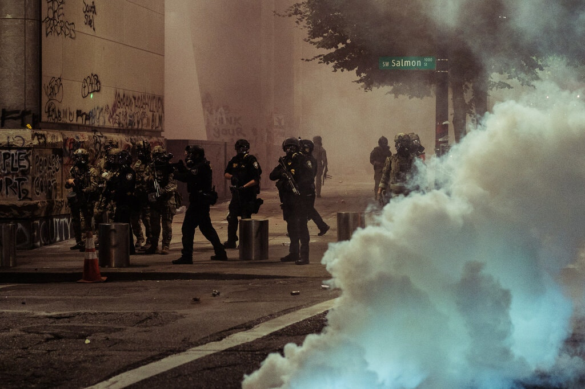

The Trump campaign is spending millions on ads that promote a dark and exaggerated portrayal of Democratic-led cities, a tactic that reinforces
his “law and order’’ campaign message. As President Trump deploys federal agents to Portland, Ore., and threatens to dispatch more to other
cities, his re-election campaign is spending millions of dollars on several ominous television ads that promote fear and dovetail with his
political message of “law and order.” The influx of agents in Portland has led to scenes of confrontations and chaos that Mr. Trump and his
White House aides have pointed to as they try to burnish a false narrative about Democratic elected officials allowing dangerous protesters to
create widespread bedlam. The Trump campaign is driving home that message with a new ad that tries to tie its dark portrayal of Democratic-led
cities to Mr. Trump’s main rival, Joseph R. Biden Jr. — with exaggerated images intended to persuade viewers that lawless anarchy would prevail
if Mr. Biden won the presidency. The ad simulates a break-in at the home of an older woman and ends with her being attacked while she waits on
hold for a 911 call, as shadowy, dark intruders flicker in the background. So far, the campaign has spent almost $20 million over the last 20
days on that ad and two other similar ones, more than Mr. Biden has spent on his total television budget in the same time frame, and a
relatively large sum for this stage of the race. Though the ads predate the federal actions in Portland, they convey a common theme of
lawlessness under Democratic leadership. “I’d bet a lot that the actress they hired for this is more worried about Covid-19 than a phony
threat about cops,” Mr. Stevens said. Of the $24 million the Trump campaign has spent over all on television ads over the past 20 days,
roughly $20 million has gone to ads that focus solely on the issue of the police. About 70 percent of that $20 million has been spent on
a singular ad that shows a split screen: One side depicts an empty 911 call center, with an answering service asking callers to select
their emergency, and the other displays violent scenes from the protests.

The focus of the Trump administration in recent days has been on Portland, where there have been nightly protests for weeks denouncing systemic
racism in policing. In the last few days, federal agents from the Department of Homeland Security and U.S. Marshals, traveling in unmarked cars,
have swooped protesters off the street without explaining why, in some cases detaining them and in other cases letting them go because they were
not actually suspects. The protests have increased in size since the arrival of federal officials. Mr. Trump’s deployment of federal law
enforcement is highly unusual: He is acting in spite of local opposition — city leaders are not asking for help — and his actions go beyond
emergency steps taken by some past American leaders like President George H.W. Bush, who sent troops to quell Los Angeles in 1992 at the
request of California officials. In Washington on Tuesday, Department of Homeland Security officials held a news conference for the first
time to address the increased federal deployment in Portland, defending the tactics and training of the agents. Chad F. Wolf, the acting
secretary, said a federal statute allowed the agents to move away from the courthouse that they had been told to defend, to investigate crimes
against federal property and officers, even if it resulted in the detaining of a protester. Another top official, Mark Morgan, disputed claims
that the agents lacked adequate insignia, showing reporters a camouflaged ballistic vest labeled “POLICE.” Mr. Wolf also blamed local officials
for the unrest in Portland. “I asked the mayor and governor, how long do you plan on having this continue?” Mr. Wolf said. “We stand ready.
I’m ready to pull my officers out of there if the violence stops.” The president has said he might next deploy federal agents to Chicago,
and has listed other cities where similar enforcement could take place, including New York but also Philadelphia and Detroit, urban centers
in two battleground states. White House officials said the deployments had grown out of meetings among administration officials after protests
in Washington, D.C., in late May and early June. The ads are on a political track. But for former Homeland Security officials who served in
the first year of the Trump administration, seeing images of federal forces on the streets of American cities was distressing. “People like
me, who served a long time, have to look very long and hard to figure out who these people are,” said Col. David Lapan, a retired Marine who
served in the Trump administration in 2017 as a spokesman for the Department of Homeland Security. “For the average citizen, it looks like
the military is being used to suppress American citizens. Even if that’s not the case, and this is law enforcement, it creates the impression
that the military is being used.” In a statement on Tuesday evening, Mr. Biden drew a parallel with the largely peaceful protesters who were
cleared from a park near the White House on June 1 by armed law enforcement officials using chemical irritants before Mr. Trump’s photo-op
outside a historic church. “They are brutally attacking peaceful protesters, including a U.S. Navy veteran,” Mr. Biden said of the force
used in Portland. “Of course the U.S. government has the right and duty to protect federal property. The Obama-Biden administration protected
federal property across the country without resorting to these egregious tactics — and without trying to stoke the fires of division in this
country.” In response, Mr. Trump’s campaign accused Mr. Biden of attacking law enforcement officials. Tom Ridge, the former governor of
Pennsylvania who was the first person to serve as secretary of Homeland Security, also condemned Mr. Trump’s actions. ”The department was
established to protect America from the ever-present threat of global terrorism,” Mr. Ridge, a Republican, told the radio host Michael
Smerconish. “It was not established to be the president’s personal militia.” Mr. Ridge said it would be a “cold day in hell” before he would
have consented as a governor to what is taking place. “I wish the president would take a more collaborative approach toward fighting this
lawlessness than the unilateral approach he’s taken,” he said.
The White House has defended the recent measures. “By any objective standard, the violence, chaos and anarchy in Portland is unacceptable, yet
Democrats continue to put politics above peace while this president seeks to restore law and order,” the White House press secretary, Kayleigh
McEnany, said at a briefing on Tuesday morning. She listed an array of items she said protesters had hurled at law enforcement officers.
Trump administration officials and campaign aides have woven together the protests that began after the killing of George Floyd in May to try to bolster their claim that under Mr. Biden, the police would be “defunded.” While Mr. Biden has walked a careful line and said explicitly that he doesn’t support defunding police departments, the Trump campaign has continued to claim otherwise.
The most recent ad from the Trump campaign, depicting the break-in at a woman’s home, has a singular goal: terrifying the viewer into
believing that claim. The ad’s audio includes a news broadcast that talks about “Seattle’s pledge to defund its police department,” referring
to another progressive city with which Mr. Trump has feuded. The spot hews to Mr. Trump’s long-held preference for messages that promote fear
and division, dating to the first ad of his 2016 presidential campaign, which depicted immigrants as criminals. The campaign has already
spent nearly $550,000 on its new ad, which was released on Monday. Describing his opponents as supporting violence while portraying police
officers in glowing terms has been a mainstay of Mr. Trump’s public discourse since the late 1980s. Protests around the country have been largely peaceful, with spikes of conflict usually arising in clashes with law enforcement. While polls show that a majority of voters support the Black Lives Matter movement, Mr. Trump and some of his advisers are counting on a backlash, so far nonexistent, with white voters in the fall that will boost the president’s numbers.
“Clearly what they’re looking to do here is scare the living hell out of seniors,” said Pia Carusone, a Democratic ad maker. But, she said,
the new Trump ad falls short in the realm of believability.